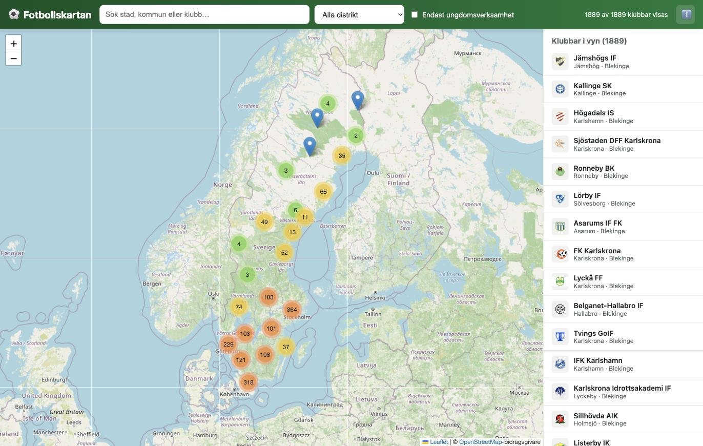

Annons

En interaktiv karta över alla svenska fotbollsklubbar – med adress, telefon och hemsida. Sök upp lag för en träningsmatch, hitta klubbar runt träningslägret, eller en förening åt barnen att börja i.
⚽ Öppna kartan
Fotbollskartan samlar hela Svenska Fotbollförbundets klubbregister på en karta, så att du snabbt kan se vilka lag som finns i ett område – inte bara de du redan känner till.
Sök upp klubbar i ett område ni vill åka till, eller runt er egen ort, och hör av er direkt via telefon, e-post eller hemsida – allt finns samlat i klubbens kartnål.
Zooma in på orten ni ska till så visar sidopanelen automatiskt vilka klubbar och planer som finns i närheten – bra att veta inför läger eller cuper på ny ort.
Filtrera på ungdomsverksamhet och sök i ert närområde för att se vilka klubbar som finns att välja mellan innan ni bestämmer var barnen ska börja spela.
Ingen inloggning, inget krångel – öppna kartan och börja söka direkt.
Skriv en stad, kommun eller ett klubbnamn i sökrutan, eller zooma och panorera fritt på kartan.
Begränsa till ett fotbollsdistrikt eller visa bara klubbar med ungdomsverksamhet.
Sidopanelen visar automatiskt de klubbar som syns i den del av kartan du tittar på just nu.
Klicka på en klubb för adress, telefonnummer, e-post och hemsida – redo att höra av dig.
Kartan är gratis att använda och uppdateras löpande med fler bekräftade adresser.
⚽ Öppna kartan